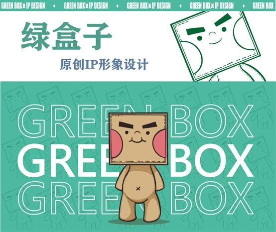
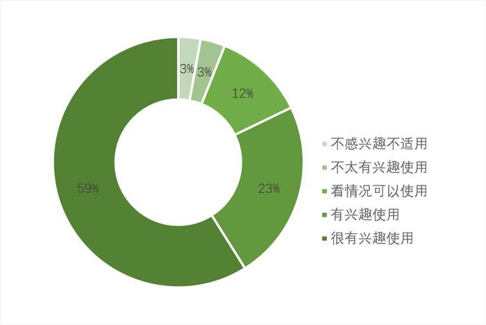
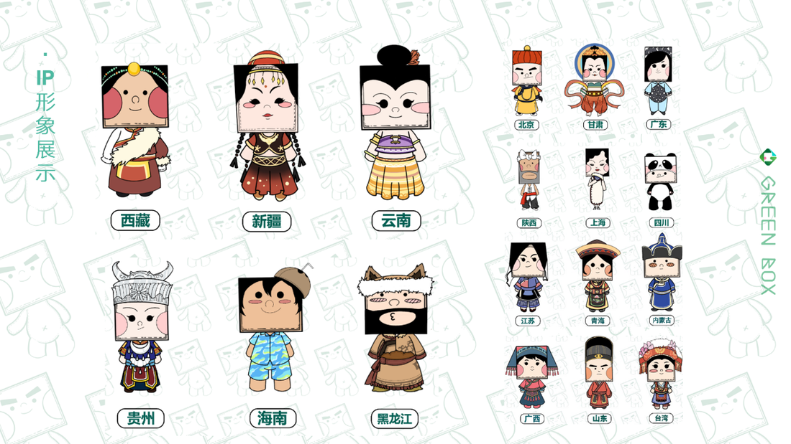
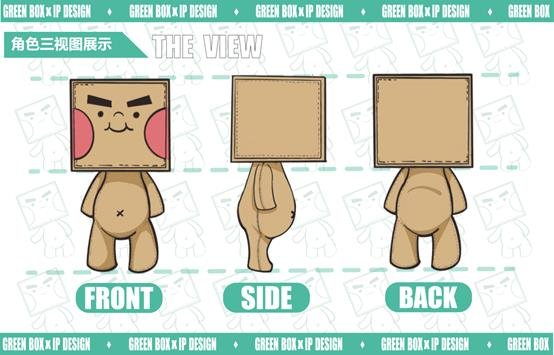
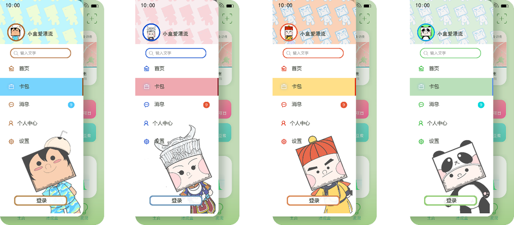
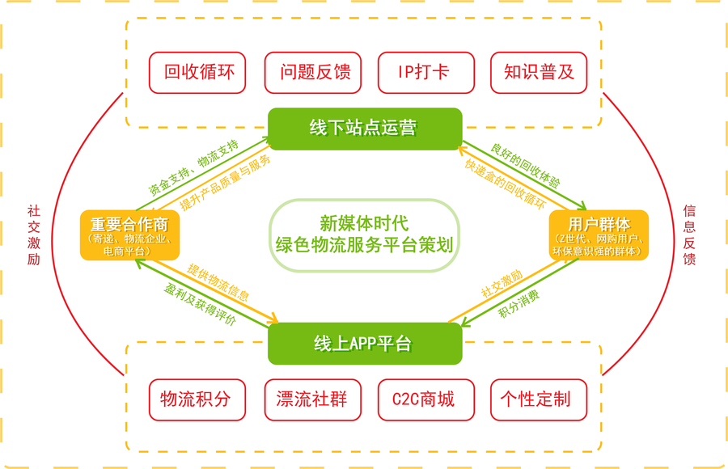

微信小程序 + 线下实体回收站点双平台，提升校园快递包装回收率的循环经济方案。

中国快递业务量在 2010–2019 年间从 23.4 亿件增长到 833.6 亿件，增长约 40 倍，随之而来的包装废弃物问题却长期缺乏有效治理：邮政快递业每年消耗纸类废弃物超过 900 万吨、塑料废弃物约 180 万吨，且快递包装垃圾在部分特大城市已占生活垃圾增量的 85%–93%。与此同时，国家陆续出台《关于加快推进快递包装绿色转型的意见》等政策，明确到 2025 年可循环快递包装应用规模要达到 1000 万个——这既是一个亟需解决的环保问题，也是一个处于政策红利期、竞争尚不充分的市场机会。
团队面向 Z 世代年轻群体发放问卷，回收 315 份、有效率 70%，并结合 SPSS 对用户行为与态度做定量分析，用用户旅程图梳理「收快递 → 拆包装 → 处理包装」全过程中的关键阻碍点。
调研发现用户对可循环快递盒的核心诉求集中在：外观采用绿色 / 棕色等自然色系并使用可降解材料、不需要额外付费参与、IP 化的辨识度设计、参与门槛足够低；在激励机制上，多数用户希望能用积分兑换公益活动或抵扣寄件费用，而非单纯的现金奖励。这些发现直接决定了后续产品的 IP 化定位与积分体系设计。

集物流信息查询、C2C 商城与社群于一体：用户通过交回快递包装获得「绿豆」积分，可在「绿盒」商城兑换 IP 周边或参与公益活动；考虑到年轻用户的社交习惯，还设计了「漂流盒」树洞社群功能，让用户在等快递、处理包装之外也能获得情感连接。原创 IP「小盒」以 34 个省份 / 自治区 / 直辖市的地域特色为原型设计，让不同规格的包装都能对应一个有辨识度的角色形象。



结合网红打卡效应布局线下站点：以江南大学为试运营点，重点覆盖学生拆快递最集中的菜鸟驿站与宿舍园区，站点回收所得的「绿豆」积分与线上账户互通，形成「线下回收 → 线上兑换 → 分享传播」的闭环。
项目采用「互联网 + 循环」模式，收入来源包括平台商家佣金（3%）、IP 周边销售与广告收入；计划总投资规模 400 万元，资金来源包括团队现金投资（首期 20 万元）、政府绿色治理相关投资、风险投资与寄递企业战略投资，形成覆盖研发、推广与运营的完整资金结构。

团队还通过 A/B 测试验证了积分弹窗提示的界面优化：调整后用户的回收行为触发率提升 55%。项目最终与 2 家物流企业达成合作意向，推动校园试点向区域化扩展，并获评省级重点创新项目认证及校方孵化支持，同时在三创挑战赛中获得校级二等奖。
这是我第一次完整走完「市场调研 — 产品方案 — 商业计划 — 落地试运营」的全链路：不仅要设计好用的交互，还要用 SPSS 把定量数据变成可以说服投资人和学校的证据，用财务模型证明商业模式能跑得通。这段经历让我在后来的人机交互研究中，一直保留着「不仅要做出来，还要能被验证、被讲清楚」的习惯。